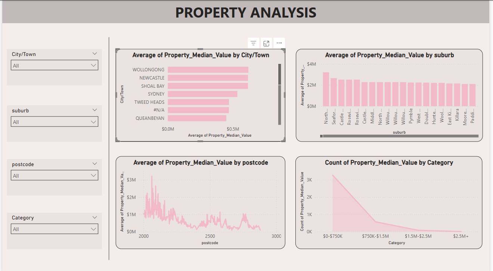

Property Analysis Dashboard Competition Sprint - Part 2 || SQL Server, SSRS, Power BI
🎯 Objective
Designed interactive reports and dashboards in SSRS and Power BI to analyze school
demographics and
property median values.

Power BI
Dashboard: Property Median
Value Insights.
🧠 Project Overview
To develop interactive, filterable reports and dashboards using SSRS and Power BI,
delivering actionable
insights into property values and school metrics across NSW based on the engineered data
model.